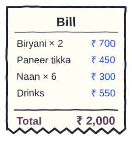
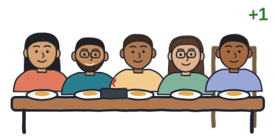
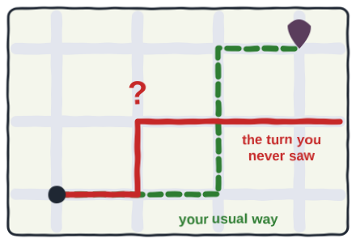
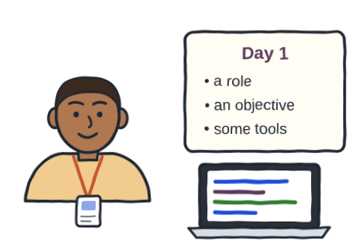
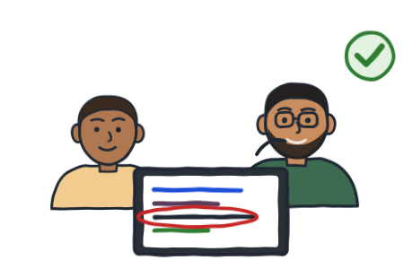
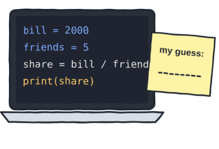

Prefer to watch? This post goes with the video (4:51). Open it on YouTube, where you can also leave a comment.
A question students keep asking me
Of late, students keep asking me one question: "Sir, AI writes code now. Should I still learn coding?" That's a very nice question, and one small test answers it.
Say you and your friends go out for dinner, and the rule is simple: everyone pays an equal share. An AI gives you two programs for it, and one of them is wrong.
Program A
share = bill ÷ friends
Program B
share = 500
First, let's be fair to the AI
You ask an AI for a program, and within 10 seconds you have it. It runs, and many times it is even correct.
But an AI writes both right and wrong code, and the wrong code doesn't always look wrong.

The goal: see what each program says for tonight's dinner.
The step: press Run. The bill is 2,000 rupees, and there are 4 friends.
Guess first: what will each program say?
What you should see: A says 500.0, and B says 500. Both look correct, right?
The reveal: it ran, and it was wrong
Now a fifth friend joins, and the bill stays the same. In the code above, on the line marked # edit here, change 4 to 5 and run it again.

A now says 400, but B still says 500. Did you find it? Program B never followed the rule; it only matched last week's answer.
The only person who can catch it is someone who can read those two lines.
The auto ride
Let's try to understand this another way. Say you took an auto to go somewhere new, and the driver takes a turn you have never seen. If you know the road, you ask him why. If you don't, you simply pay the meter.

Code works the same way: if you cannot read the road, you will not notice the wrong turn.
Reading the code an AI wrote, and judging it line by line, is what we call code review.
So with Generative AI, your job does not disappear; it shifts, from typing the code to reading it and judging it.
Agentic AI: the fresher
Agentic AI goes one step further. An agent does not stop at writing code: it plans, picks a tool, acts, checks the result, and goes again.
So if an AI can do all of this on its own, do you need to know even less?
Say you joined a company as a fresher. You get a role, an objective and some tools. That, effectively, is what an agent is.

Would any team lead give a fresher full access on day one, without checking the work? No, right? Someone who knows the job checks the work, and with agents, that someone is you.

To check the work, you must know the job yourself. This is what we call keeping a human in the loop.
What coding really trains
So what does knowing the job really mean? A program is a set of well-defined instructions, and learning to code trains you to think in exact steps, with no ambiguity.
That same skill makes your prompts sharp, because a vague instruction gets you a vague program.
In a nutshell, the AI types faster than you, but you decide what is right.
The honest cost
Deciding what is right is a skill, and every skill has a cost. Learning to code takes time, and you will fail many times. There is no shortcut around it, and I am not going to pretend there is one.
Not every problem needs code, or an agent, either. Start with the problem, then pick the tool: fit-for-purpose thinking, not trend-first thinking.
The takeaway
- An AI writes code fast, and it writes both right and wrong code. The wrong code can run without a single error.
- Your job shifts from typing the code to reading it and judging it, and with agents, to checking their work.
- Learning to code trains you to think in exact steps, so you can say what is needed and judge what you get.
So an AI can write the code. But you still need to understand what that code is supposed to do, and whether it is correct.
Read it, change it, predict it
The goal: practise reading code an AI wrote, before you trust it.
The steps: take one program that an AI wrote for you, and read it line by line. Change one number, predict the output, then run it. No program of your own yet? Ask any AI app with this:
Or use the program below. Guess first: with a 2,000-rupee bill, a 10% tip and 5 friends, how much does each person pay? Then press Run, and press Check to see if your guess matches.

If your prediction was wrong, that is good. That is exactly where the learning starts.
Come back and tell me under the video: what did the AI get wrong, that you caught? And in the first test, did you pick program B?